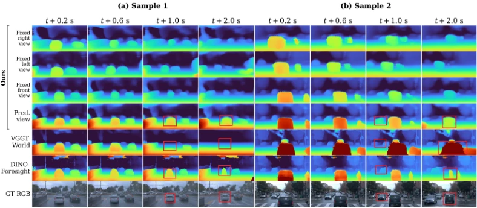

GeoState：把视角从 3D 世界状态里拆出去
GeoState: Learning View-Decoupled Geometry States for 3D World Modeling
GeoState 把冻结 VGGT-Ω 的多视角几何特征压成固定 512×512 场景状态，查询相机只在解码阶段以 Plücker 射线进入，从而把“世界是什么”与“如何观察”分开。Waymo 预测相机设置下 t+2.0 s AbsRel 0.127、δ1 0.848，比 VGGT-World 的 0.213/0.731 低 40.4%，且整个 rollout 只用最后观测帧 LiDAR 标定一次尺度。消融显示收益主要来自状态更可预测：与直接压缩 VGGT-Ω 特征的基线重建精度接近，但 t+2.0 s AbsRel 为 0.133 对 0.144。
Waymo 2.0 s AbsRel, predicted camera
AbsRel reduction vs VGGT-World at 2.0 s
2.0 s AbsRel, GT camera
dynamic-subset gain over Copy-Last, GT camera
作者、单位与技术谱系 · Research context
作者与单位
研究脉络
- VGGT-Ω方法基座关系：GeoState 直接复用其冻结的几何特征、点图/置信度/相机输出与稠密深度头，只学习状态压缩与查询解码。[官方 HTML 全文（第 3.2–3.3 节）]
- FR3D上游工作关系：沿用其 masked factorized Transformer 与零初始化残差头，但把“ego-motion 与场景分开”从时序模块前移到表示本身。[官方 HTML 全文（第 1、3.4 节）]
- VGGT-World上游工作 / 直接对照关系：VGGT-World 把冻结 VGGT 特征直接当世界状态并预测其未来；GeoState 认为这正是视角耦合的来源，并在同一 Waymo 数据上重训对照。[官方 HTML 全文（第 1、4.1 节）]
- Surflo 与 3DRAE上游工作（表示侧）关系：两者都把多视角观测压成固定长度的全局/视角解耦 latent；GeoState 借用了几何条件 token 与尺度归一化思路，但把目标从静态重建/新视角合成推进到可预测的时序状态。[官方 HTML 全文（第 2.3、3.2 节）]
合作网络
- 同济大学—腾讯的共同署名Tongji University → Tencent关系：同篇论文共同署名[项目页作者与单位列表]
- 同济大学—香港理工大学的共同署名Tongji University → Hong Kong Polytechnic University关系：同篇论文共同署名[项目页作者与单位列表]
- 同济大学—光明实验室的共同署名Tongji University → Guangdong Laboratory of Artificial Intelligence and Digital Economy (SZ) / Guangming Laboratory关系：同篇论文共同署名[项目页作者与单位列表]
- GeoState—VGGT-Ω 的技术依赖GeoState → VGGT-Ω关系：明确技术依赖（冻结主干与稠密头）[官方 HTML 全文（第 3.2–3.3 节）]
- GeoState 官方代码入口Hongchang Liu → github.com/Hongchang-Liu/GeoState关系：作者公开代码仓库（项目页链接）[项目页代码入口]
作者、单位与代码入口来自论文官方 HTML 与项目页；lineage 中的“上游/基座”关系由论文正文的引用与方法描述支持，属于有来源的解读。通讯作者身份未被论文显式标注，不作推断。
方法本质拆解 · What actually changed
是不是微调？——主干冻结，只训 tokenizer、decoder 与世界模型
VGGT-Ω 的 ViT、点图头和稠密深度头全程冻结，不更新权重；真正训练的是 Scene Tokenizer（70.46M）、Geometry Decoder（135.55M）、World Model（256.55M）与独立的相机预测器（8.99M）。tokenizer/decoder 先在约 10k 多视角场景上预训 200k 步，再在 Waymo 静态子集上适配 50k 步；world model 先单步 20k 步、再七步 rollout 35k 步。因此它不是“从头训练一个 3D 世界模型”，也不是纯测试时算法，而是在冻结 GFM 之上学习一个可预测的场景状态接口。
有没有额外约束？——固定尺寸瓶颈、显式几何 token 与单一尺度 gauge
所有场景信息必须通过 512×512 的固定尺寸状态瓶颈，解码器只拿到状态、查询相机与输出尺寸，不能回看源图像；这迫使状态压缩场景而非记忆视角。显式几何分支把点坐标、源相机位姿、Plücker 射线编码进 token，并在融合前按上下文中位数尺度归一化。尺度用最后一帧 FRONT 的 LiDAR 做一次 log 中位数标定（≥128 匹配、≤80 m），得到 L0=s0/a0 后整个 rollout 固定；损失侧用 log-depth L1 + 深度梯度，单步阶段再加状态 SmoothL1/余弦匹配。
推理/后端到底做了什么？——一次编码、按查询相机解码、自回归状态 rollout
推理时先对上下文多视角做一次冻结 VGGT-Ω 前向，再由 tokenizer 得到四个历史 GeoState；世界模型以四帧滑窗自回归预测未来状态，每个预测状态用未来相机（预测或用户指定）解码深度。整个过程没有全局 bundle adjustment、没有因子图、也没有针对测试序列的优化或后处理；相机轨迹来自一个独立的轻量预测器，nuScenes 上按 0.25 s 自回归更新位姿历史。它也没有在 rollout 中重新估计尺度，这是与基线 per-frame alignment 的关键区别。
方法本质是什么？——把相机引起的变化从状态里移到查询端
本质是把“场景内容”和“观察方式”拆成两个变量：GFM 特征先被聚合成不依赖查询视角的场景状态，相机只在解码时以射线查询的形式注入，因此时序模型只需预测场景本身的变化。这样做的直接效果是潜空间动力学更简单、长时预测更稳，同时同一状态可以在不同相机下重复查询且保持同一尺度。它没有做的是：没有显式建模动态物体、没有在线优化地图、也没有证明学到的 512 维状态具有可解释的物理含义；它只是让状态在“可预测性”这个目标下更好用。
输入/先验 = 多视角 RGB + 冻结 VGGT-Ω 几何特征 + 最后一帧 FRONT LiDAR 尺度；改变的位置 = 把视角从预测状态移到解码查询，并用固定 512×512 瓶颈压缩场景；约束或合并动作 = 显式点/位姿/射线 token、中位数尺度归一化、单次 LiDAR 标定、四帧滑窗残差预测；直接效果 = Waymo 2.0 s AbsRel 0.127（比 VGGT-World 低 40.4%），且 rollout 全程无需逐帧尺度对齐。

结论与问题Conclusion & Motivation
核心结论
GeoState 的核心主张是：GFM 特征不适合直接当世界状态，问题不在特征不够强，而在特征按视角组织。作者用冻结的 VGGT-Ω 提取多视角几何特征，经 Perceiver 式 Scene Tokenizer 压成固定 512×512 的场景状态，查询相机只在解码阶段以 Plücker 射线进入，因此同一状态可被不同视角重复查询。Waymo 预测相机设置下，t+2.0 s 的 AbsRel 为 0.127、δ1 为 0.848，相比 VGGT-World 的 0.213/0.731 降低 40.4%，且整个 rollout 只用观测上下文标定一次尺度。更有说服力的是重建质量与 VGGT-Ω 接近（t+2.0 s 0.072 对 0.078），说明收益来自状态更可预测，而不是把几何压得更准。
动机与问题
GFM（DUSt3R/VGGT 一系）的特征虽然几何信息丰富，但它们由观测视角构造和组织：相机一动，即使场景完全静止，特征也会大幅变化。把这种特征直接喂给时序模型，模型必须同时预测真实场景演化与相机引起的表示变化，二者来源不同却混在同一潜空间里，长时预测因此变难。FR3D 已经把 ego-motion 单独建模，但它的预测状态仍继承重建表示的视角依赖；作者据此提出更强的约束：状态只描述世界是什么，相机只决定如何观察它。这与 SLAM 里“地图不应绑定当前关键帧”的直觉一致，但本文是在前馈潜空间里实现，而不是因子图。
方法Method
方法总览
输入是同步多视角 RGB；冻结的 VGGT-Ω 一次前向给出四个层级的 patch 特征、像素对齐点图、置信度和估计相机。每个 patch 的特征与显式几何线索（3D 位置、源相机位姿、视线）融合成 512 维 token，所有视角的 token 组成变长 memory，再由 512 个可学习 scene query 经 8 层 Perceiver 聚合成 512×512 的 GeoState。解码时把查询相机的 Plücker 射线编码成 token，与场景 token 拼接后过 16 层联合 Transformer，再经 DPT adapter 送入冻结的 VGGT-Ω 稠密头输出归一化深度。时序侧用 FR3D 式 masked factorized Transformer 在状态空间做残差预测，四帧历史滑窗自回归；相机轨迹由独立的 8.99M 参数预测器给出，也可由用户指定。
关键技术细节
显式几何编码中的点坐标、相机平移和射线原点都按观测上下文的中位数尺度归一化，旋转与单位方向不变；四帧观测状态来自同一次 12 视图 GFM 前向，因此共享同一套 a0、s0、L0。尺度标定只用最后一帧观测 FRONT 相机的 LiDAR：对匹配像素取 log 深度差的中位数，要求至少 128 个有效匹配、LiDAR 深度不超过 80 m；之后 L0=s0/a0 在整个 rollout 固定，不用未来目标帧重新对齐。训练分三段：tokenizer+decoder 先在约 10k 多视角场景（DL3DV、TartanAir、RealEstate10K、CO3D、WildRGB-D）上训 200k 步（lr 1e-5），再在 Waymo 静态子集上训 50k 步（lr 5e-6）；world model 先做 20k 步单步预测，再做 35k 步七步自回归 rollout。模块规模分别为 70.46M、135.55M、256.55M，VGGT-Ω 全程冻结。

实验Experiments
实验设置
域内评估用 Waymo 的 100 个留出窗口；零样本迁移用 113 段合格 KITTI 驾驶序列和 nuScenes validation 全部 150 个场景。world model 训练覆盖 800 段、约 140k 窗口，每个窗口 4 个上下文状态 + 7 个未来状态，间隔 0.2 s，上下文相机为 FRONT/FRONT_LEFT/FRONT_RIGHT。指标是逐帧 AbsRel 与 δ1（Eigen 阈值），跨视角一致性另用对称重投影 AbsRel。对照包括 DINO-Foresight、VGGT-World、FR3D（直接取原论文数字）以及三个 Copy-Last 变体（固定视角、GT 相机、预测相机）。尺度协议是关键差异：三个基线按目标帧做 per-frame alignment，GeoState 只用最后观测帧的 LiDAR 标定一次。
实验数字与比较
Waymo 预测相机、t+2.0 s：GeoState AbsRel 0.127 / δ1 0.848，VGGT-World 0.213/0.731（AbsRel 低 40.4%），FR3D 0.152/0.800，DINO-Foresight 0.243/0.663；t+0.2 s 为 0.065/0.939 对 VGGT-World 0.073/0.931。GT 相机、t+2.0 s：GeoState 0.099/0.888，camera-matched Copy-Last 0.108/0.865，说明预测状态确实带来超出“换视角重查”的增益。零样本 t+2.0 s：KITTI 0.155/0.821 对 VGGT-World 0.198/0.732、FR3D 0.178/0.758；nuScenes t+2.5 s 0.213/0.666 对 0.282/0.637、FR3D 0.229/0.660。动态/静态分层（10 个 horizon 平均）：动态子集 AbsRel 相对 camera-matched Copy-Last 降低 13.10%（GT 相机）/9.63%（预测相机），静态子集仅 4.92%/2.17%。相机预测器本身在 Waymo 上 ATE 从 0.0125 m（0.2 s）升到 0.3117 m（2.0 s），RRE 0.1894°→0.3755°，说明 2 s 处的深度优势不是在“完美相机”假设下取得的。
消融/失败边界
表示消融（表 4）把 VGGT-Ω 特征直接压成 512×512 latent 作对照：预测模式下 t+2.0 s AbsRel 0.144 对 GeoState 0.133，t+0.6 s 0.092 对 0.081，而两者重建精度接近，作者据此把差距归因于状态可预测性而非压缩损失。状态监督消融（表 5）：只在 rollout 阶段做深度监督、不做单步状态匹配时 t+2.0 s 为 0.108；单步状态匹配 + rollout 为 0.107；只做单步状态匹配、rollout 不再匹配状态为 0.099——把 latent matching 贯穿 rollout 反而损害长时性能，最终模型采用后者。这给出一个明确边界：状态监督适合初始化局部转移，不适合强制唯一潜轨迹。另一个边界是尺度：单视图受控变体（只有 FRONT）在 t+2.0 s 退化到 0.143/0.813，虽仍优于 FR3D 的 0.152/0.800，但说明三视角上下文对性能有实质贡献。
局限与迁移Limitations & Transfer
局限与待核验
论文没有单独的 Limitations 章节，作者只在结论里把具身场景列为未来工作，因此以下边界部分是我们的核验项。第一，评估全部是驾驶数据（Waymo/KITTI/nuScenes），没有室内、手持或机器人平台，不能直接外推到你的 UAV/地面机器人序列。第二，尺度标定依赖最后一帧观测 FRONT 相机的 LiDAR，且要求 ≥128 个有效匹配、深度 ≤80 m；LiDAR 缺失、退化或强遮挡时的行为没有报告。第三，跨视角一致性只有图 3 的曲线，没有表格数字，正文也未给出 Small/Medium/Large 各档的具体 AbsRel，引用时只能写趋势，精确值待核验。第四，FR3D 的数字直接取自原论文而非在同一数据/协议下重训，比较存在协议差异。第五，正文在表示消融处写“As shown in Table 5”，但该表实际是 Table 4（Table 5 为状态监督消融），属论文内部引用不一致，阅读时以表题为准。
与你研究路线的关系
最可直接迁移的是“单一尺度 gauge 贯穿整个预测/查询”的做法：在 SLAM 里对应只在初始化或锚点帧估计一次尺度，后续回环、查询、评估都不做 per-frame 对齐；这能避免把尺度漂移误判成几何误差。第二个可迁移模块是“状态与查询分离”的接口设计：把局部地图当作与当前关键帧解耦的状态，把位姿当作查询条件，用对称重投影 AbsRel 检查同一地图在不同位姿下的自一致性——这比只看相邻帧深度差更接近你关心的地图可查询性。第三，显式几何 token（点、位姿、射线 + 中位数尺度归一化）可以作为一个轻量条件分支，接到你现有的 GFM/深度后端上，而不必替换主干。下一步建议做最小 A/B：在同一段多传感器序列上，(a) 用固定尺度 vs 每帧对齐分别评估深度/点图误差；(b) 对同一重建做 Small/Medium/Large 位姿扰动查询，统计对称重投影 AbsRel，验证“地图一致性”是否被 per-frame 对齐掩盖。若要在动态场景上用，需先确认它的静态 Waymo 适配是否掩盖了动态物体的状态污染。